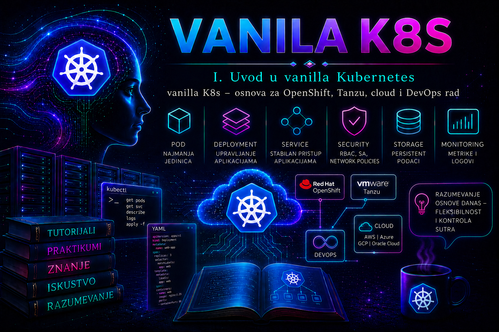

Vanilla Kubernetes

Vanilla Kubernetes je najvažnija zajednička osnova savremenih platformi za orkestraciju kontejnera. OpenShift, VMware Tanzu platforme, upravljani servisi javnih cloud provajdera i brojna interna enterprise rešenja razlikuju se po načinu instalacije, bezbednosnim podrazumevanim vrednostima, mrežnim i skladišnim integracijama, alatima za upravljanje i modelu podrške, ali se u njihovom središtu i dalje nalaze Kubernetes API, deklarativni objekti, kontrolne petlje i isti osnovni način razmišljanja. Administrator koji razume samo grafički interfejs ili komande jedne distribucije može uspešno da izvršava unapred poznate procedure, ali teško dijagnostikuje problem kada apstrakcija platforme prestane da skriva ono što se događa u osnovnom Kubernetes sloju.
Učenje vanilla Kubernetes-a ne znači odbacivanje enterprise platformi. Naprotiv, ono omogućava njihovo pravilno razumevanje. Cilj nije da administrator u produkciji samostalno sastavlja svaku komponentu ako organizacija već koristi podržanu distribuciju, već da razume šta platforma automatizuje, koje standardne Kubernetes objekte kreira, gde uvodi sopstvene proširene resurse i šta mora proveriti pre nego što problem proglasi greškom proizvoda, mreže, skladišta ili aplikacije.
Kubernetes kao zajednički jezik platformi
Kubernetes upravlja željenim stanjem sistema. Administrator kroz API kreira ili menja objekat, na primer Deployment sa dve replike aplikacije. Kontroleri zatim porede željeno stanje sa stvarnim stanjem i preduzimaju korake da razliku uklone. Deployment Controller upravlja ReplicaSet objektima, ReplicaSet održava potreban broj Pod-ova, scheduler bira odgovarajuće node-ove, a kubelet na izabranom node-u sarađuje sa container runtime-om kako bi kontejneri bili pokrenuti.
Ovaj model ostaje prepoznatljiv na različitim platformama. OpenShift dodaje integrisane operatore, strože bezbednosne mehanizme, sopstvene API resurse i administrativne tokove. Tanzu Kubernetes rešenja povezuju Kubernetes sa VMware infrastrukturom, politikama, mrežom, skladištem i upravljanjem životnim ciklusom. Upravljani cloud servisi preuzimaju deo ili celokupno održavanje control plane-a. Ipak, administrator i dalje proverava Pod-ove, Deployment-e, Service objekte, događaje, prava pristupa, zahteve za resursima, persistentne volumene i stanje rollout-a.
Zbog toga poznavanje vanilla Kubernetes-a ima operativnu vrednost u migracijama. Aplikacija zasnovana na standardnim objektima kao što su Deployment, StatefulSet, Service, ConfigMap, Secret, Job, CronJob, PersistentVolumeClaim i Ingress obično se lakše prenosi između platformi od aplikacije koja zavisi od velikog broja specifičnih proširenja jednog proizvođača. Potpuna prenosivost ipak nije automatska. StorageClass, Ingress implementacija, LoadBalancer servis, mrežne politike, identiteti, politike prijema, način čuvanja tajni i podržane verzije API resursa zavise od konkretnog okruženja.
Šta se zaista uči kroz vanilla Kubernetes
Najvažnija stečena veština nije pamćenje komandi, već razumevanje odnosa između objekata i komponenti. Kada Pod nije pokrenut, administrator ne zaključuje odmah da je „Kubernetes pokvaren”. Najpre utvrđuje da li je objekat prihvaćen kroz API, da li je Pod kreiran, da li ga je scheduler rasporedio, da li node ima potrebne resurse, da li je image preuzet, da li su volumen i mreža pripremljeni i da li je aplikacioni proces prošao readiness i liveness provere.
Takav metod rada primenljiv je na gotovo svako Kubernetes okruženje. Status Pending nije uzrok problema već stanje koje može ukazivati na nedostatak CPU-a ili memorije, nepodudarne affinity uslove, taint bez odgovarajuće toleration konfiguracije, nedostupan persistentni volumen ili grešku mrežnog dodatka. Status CrashLoopBackOff ukazuje da se kontejner pokreće i ponovo završava, ali razlog može biti pogrešna komanda, nedostajuća konfiguracija, nedostupna zavisnost, neodgovarajuća prava na fajl sistemu ili neuspešna provera zdravlja.
Administrator kroz vanilla Kubernetes uči i granice različitih slojeva odgovornosti. Kubernetes održava deklarisano stanje objekata, ali ne može sam da popravi neispravnu aplikaciju, pogrešan SQL upit, loše dizajniran storage backend ili pogrešno postavljen DNS zapis van klastera. On može ponovo pokrenuti kontejner, ali time ne uklanja uzrok ako aplikacija svaki put završava zbog iste greške.
Osnova za OpenShift administraciju
OpenShift Container Platform je Kubernetes platforma sa dodatnim enterprise komponentama, automatizovanim upravljanjem i bezbednosnim kontrolama. Administrator koji poznaje Kubernetes lakše razume zašto OpenShift objekat Deployment i dalje ima Pod template, selektor, replike i rollout istoriju, dok Operator kroz custom resource može upravljati čitavim skupom Kubernetes resursa.
Komanda oc proširuje funkcionalnost kubectl, ali veliki broj osnovnih operacija izgleda isto: čitanje objekata, prikaz YAML definicije, pregled logova, događaja, prava i rollout statusa. Razlike postaju važne kada OpenShift uvodi Route objekte, projekte, Operators, Machine API, ugrađeni image registry, konzolu, OAuth integraciju i bezbednosne politike karakteristične za platformu.
Posebno je važno razumeti da aplikacija koja radi u lab klasteru sa širokim privilegijama ne mora raditi pod strožim OpenShift bezbednosnim pravilima. Kontejner koji zahteva root korisnika, zapisivanje u proizvoljne sistemske direktorijume, privilegovani režim ili fiksni numerički UID može biti odbijen ili može završiti nakon pokretanja. Vanilla znanje pomaže da administrator razlikuje standardni Kubernetes zahtev aplikacije od platformske bezbednosne odluke i da umesto neselektivnog povećanja privilegija prilagodi image i manifest.
Osnova za Tanzu i VMware okruženja
U VMware okruženju Kubernetes nije odvojen od infrastrukture. Raspoloživost node-ova zavisi od virtuelnih mašina, hostova, datastore kapaciteta, mrežnih segmenata, DNS-a, NTP-a, load balancer-a i politika vSphere platforme. Tanzu dodaje slojeve kojima se klasteri kreiraju, povezuju sa infrastrukturom i održavaju kroz podržane procedure.
Vanilla Kubernetes znanje omogućava administratoru da utvrdi na kom sloju se problem nalazi. Pod u stanju Pending zbog nepovezanog PersistentVolumeClaim-a najpre zahteva pregled PVC-a, StorageClass-a, CSI kontrolera i događaja. Tek nakon toga proveravaju se datastore, privilegije vCenter naloga, mrežna dostupnost i stanje storage sistema. Bez tog redosleda timovi često nepotrebno prebacuju incident između aplikacionog, Kubernetes, VMware, mrežnog i storage tima.
Jednako je važno razumeti šta se ne sme menjati ručno. Kada određene objekte generiše ili usklađuje Operator, Cluster API kontroler ili platformski menadžment sistem, ručna promena može biti vraćena na prethodnu vrednost ili može dovesti do nepodržanog stanja. Administrator pre promene mora proveriti vlasničke reference objekta, anotacije, dokumentovanu proceduru proizvoda i kontroler koji resursom upravlja.
Osnova za upravljane cloud servise
U servisima kao što su Amazon Elastic Kubernetes Service, Azure Kubernetes Service i Google Kubernetes Engine, cloud provajder upravlja delom platforme, ali korisnik i dalje odgovara za veliki deo konfiguracije workload-a, prava, mrežne izloženosti, zahteva za resursima, tajni, observability sistema i životnog ciklusa aplikacija. Granica odgovornosti razlikuje se po servisu i izabranom modelu upravljanja.
Standardni Kubernetes objekat Service tipa LoadBalancer može pokrenuti kreiranje cloud load balancer-a, ali stvarno ponašanje zavisi od cloud integracije, anotacija, mrežnih opsega, firewall pravila i identiteta. PersistentVolumeClaim može automatski dobiti disk, ali tip diska, zona, politika proširenja, snapshot mogućnosti i trošak zavise od StorageClass-a i CSI drajvera.
Administrator koji poznaje samo cloud portal vidi krajnji rezultat, dok administrator sa Kubernetes osnovom može da prati lanac od manifestacije u API objektu, preko kontrolera, do cloud resursa. To smanjuje vreme dijagnostike i rizik da se problem rešava ručnom promenom cloud objekta koji će kontroler kasnije ponovo izmeniti.
Osnova za DevOps, GitOps i automatizaciju
Kubernetes je deklarativan sistem i zato se prirodno povezuje sa verzionisanjem konfiguracije, automatizovanim testiranjem i GitOps modelom. Manifest opisuje željeno stanje, a alat primenjuje ili usklađuje to stanje u klasteru. Administrator mora razumeti posledice promene pre nego što je automatizacija izvrši na velikom broju objekata ili klastera.
Komanda kubectl apply nije samo drugačiji način izvršavanja ručne instalacije. Ona predstavlja upravljanje deklaracijom koja se može pregledati, verzionisati, validirati i vratiti na raniju reviziju. Međutim, mešanje ručnih izmena, GitOps kontrolera, Helm izdanja i različitih automation pipeline-ova može dovesti do konflikta vlasništva nad poljima i stalnog vraćanja konfiguracije.
Za DevOps rad potrebno je razumeti najmanje sledeće: stabilne i eksplicitne image tagove, razdvajanje konfiguracije od image-a, readiness provere, ograničenja resursa, kontrolisani rollout, rollback, upravljanje tajnama, prava servisnih naloga i proveru rezultata nakon implementacije. Pipeline koji samo dobije izlazni kod nula iz komande kubectl apply nije dokaz da je aplikacija funkcionalna. Potrebni su rollout status, provera dostupnih replika, test servisnog endpoint-a i pregled relevantnih događaja.
Prednosti i granice vanilla pristupa
| Oblast | Prednost vanilla znanja | Granica koju administrator mora uvažiti |
|---|---|---|
| Prenosivost | Standardni API objekti i obrasci primenljivi su na različite distribucije. | Storage, ingress, identiteti, load balancer-i i politike ostaju platformski zavisni. |
| Troubleshooting | Problem se prati od API objekta do Pod-a, node-a i infrastrukturne integracije. | Za dublje incidente potrebna je dokumentacija konkretne distribucije i provajdera. |
| Automatizacija | Deklarativni manifesti mogu se verzionisati, testirati i ponavljati. | Više alata ne sme nekontrolisano upravljati istim poljima i objektima. |
| Bezbednost | RBAC, ServiceAccount i security context koncepti zajednički su platformama. | Distribucije mogu nametati dodatne ili strože kontrole. |
| Životni ciklus | Razumevanje komponenti olakšava planiranje nadogradnje. | Nadogradnja podržane distribucije mora pratiti proceduru proizvođača, ne proizvoljan upstream postupak. |
Vanilla Kubernetes nije uvek najbolji produkcioni izbor. Samostalno projektovanje i održavanje klastera zahteva stručnost za control plane visoku dostupnost, etcd backup i restore, PKI, mrežu, storage, sigurnosne zakrpe, monitoring i nadogradnje. Organizacija kojoj je potrebna ugovorna podrška, integrisano upravljanje životnim ciklusom ili sertifikovana platforma često će opravdano izabrati enterprise distribuciju ili upravljani cloud servis. Vanilla okruženje je, međutim, izuzetno vredno za učenje, testiranje standardnih API obrazaca, reprodukciju problema i razumevanje onoga što distribucije automatizuju.
Verzije, kompatibilnost i administratorska odgovornost
Kubernetes koristi verzije oblika x.y.z. Administrator ne sme pretpostaviti da su svi klijenti, API resursi i dodaci međusobno kompatibilni. Verzija kubectl treba da bude u podržanom rasponu u odnosu na kube-apiserver; upstream politika podržava kubectl unutar jedne minor verzije starije ili novije od API servera. Distribucija ili proizvođač mogu nametnuti dodatna ograničenja.
Pre svake promene proveravaju se verzija klijenta i servera, podržane API grupe, deprecirane funkcije, dokumentacija distribucije i eventualni zahtevi dodataka. Nakon promene proveravaju se rollout, događaji, stanje node-ova, dostupnost servisa i greške u kontrolerima. Činjenica da je YAML sintaksno ispravan ne znači da je resurs podržan niti da će aplikacija postići funkcionalno stanje.
kubectl version
kubectl api-resources
kubectl api-versions
kubectl explain deployment.spec.strategy
kubectl explain deployment.spec.template.spec.containersKomanda kubectl explain koristi OpenAPI šemu koju objavljuje ciljni API server i zato je dragocena za proveru polja koja taj klaster izlaže. Ona ipak ne dokazuje da će konkretan zahtev proći autentikaciju, autorizaciju, admission kontrolu i sve platformske politike, niti da će zavisni kontroler uspešno ostvariti željeno stanje. Posebno je opasno kopiranje starih manifesta sa uklonjenim API verzijama ili oslanjanje na funkcije čiji su status, podrazumevane vrednosti ili feature gate uslovi promenjeni.
Integrisani praktikum: prenosiv obrazac implementacije aplikacije
Poslovni i tehnički kontekst. Organizacija priprema standardni Kubernetes obrazac koji će se najpre proveriti u lokalnom vanilla klasteru, a zatim prilagoditi za OpenShift, Tanzu ili upravljani cloud servis. Cilj nije instalacija produkcionog klastera, već proverljiva implementacija aplikacije korišćenjem standardnih API objekata, kontrolisanog rollout-a, servisnog otkrivanja i minimalnih prava pristupa.
Referentno okruženje. Administratorska Linux radna stanica koristi kubectl i lokalni minikube klaster pod nazivom vanilla-lab. Kreira se namespace training-app, Deployment web-demo, ClusterIP Service web-demo, ServiceAccount app-reader i namespace Role sa pravima samo za čitanje Pod-ova, Service objekata i događaja. Aplikacija koristi Kubernetes test image registry.k8s.io/e2e-test-images/agnhost:2.53 i sluša na TCP portu 8080.
Preduslovi i prava. Korisnik mora imati pravo da u lokalnom klasteru kreira namespace, workload, Service i RBAC objekte. U produkciji se ova prava ne dodeljuju automatski aplikacionom timu. Manifesti se čuvaju u direktorijumu ~/vanilla-k8s/lesson-02. Ne koriste se stvarni tokeni, sertifikati ni eksterne tajne.
-
Provera alata i aktivnog konteksta.
Pre bilo kakve promene administrator potvrđuje da komande neće biti izvršene nad pogrešnim klasterom. Posebno je važno proveriti trenutni context kada radna stanica sadrži kubeconfig podatke za više okruženja.
Očekivani rezultat: alati vraćaju verzije bez greške. Ukoliko trenutni context nijekubectl version --client minikube version kubectl config get-contexts kubectl config current-contextvanilla-lab, još se ne izvršava nijedna promena. -
Pokretanje lokalnog klastera.
Klaster se pokreće sa dve radne instance kako bi se proverilo da Kubernetes može rasporediti više replika. Ovaj klaster je laboratorijski i ne predstavlja produkcionu HA arhitekturu.
Validacija:minikube start --profile=vanilla-lab --nodes=2 kubectl config use-context vanilla-lab
Oba node-a moraju imati stanjekubectl cluster-info kubectl get nodes -o wide kubectl wait --for=condition=Ready nodes --all --timeout=180sReady. Ako node ostaneNotReady, pregledaju sekubectl describe node, događaji i izlaz komandeminikube logs --profile=vanilla-lab. Implementacija aplikacije se ne nastavlja dok osnovno stanje klastera nije stabilno. -
Priprema direktorijuma i manifesta.
Svi objekti nalaze se u jednom verzionisanom fajlu kako bi promena bila ponovljiva i pregledna.
Deployment koristi dve replike, readiness i liveness provere, zahteve i limite resursa, neprivilegovani režim i isključeno automatsko montiranje API tokena. Service bira Pod-ove preko istog label selektora. RBAC prava su ograničena na čitanje objekata u jednom namespace-u.mkdir -p ~/vanilla-k8s/lesson-02 cd ~/vanilla-k8s/lesson-02 cat > web-demo.yaml <<'EOF' apiVersion: v1 kind: Namespace metadata: name: training-app labels: environment: training --- apiVersion: apps/v1 kind: Deployment metadata: name: web-demo namespace: training-app labels: app.kubernetes.io/name: web-demo app.kubernetes.io/part-of: vanilla-training spec: replicas: 2 revisionHistoryLimit: 5 progressDeadlineSeconds: 120 selector: matchLabels: app.kubernetes.io/name: web-demo strategy: type: RollingUpdate rollingUpdate: maxUnavailable: 0 maxSurge: 1 template: metadata: labels: app.kubernetes.io/name: web-demo app.kubernetes.io/part-of: vanilla-training spec: automountServiceAccountToken: false containers: - name: web image: registry.k8s.io/e2e-test-images/agnhost:2.53 args: - netexec - --http-port=8080 ports: - name: http containerPort: 8080 readinessProbe: httpGet: path: /hostname port: http initialDelaySeconds: 2 periodSeconds: 5 timeoutSeconds: 2 failureThreshold: 3 livenessProbe: httpGet: path: /hostname port: http initialDelaySeconds: 10 periodSeconds: 10 timeoutSeconds: 2 failureThreshold: 3 resources: requests: cpu: 25m memory: 32Mi limits: cpu: 200m memory: 128Mi securityContext: allowPrivilegeEscalation: false capabilities: drop: - ALL runAsNonRoot: true seccompProfile: type: RuntimeDefault --- apiVersion: v1 kind: Service metadata: name: web-demo namespace: training-app spec: type: ClusterIP selector: app.kubernetes.io/name: web-demo ports: - name: http port: 80 targetPort: http --- apiVersion: v1 kind: ServiceAccount metadata: name: app-reader namespace: training-app automountServiceAccountToken: false --- apiVersion: rbac.authorization.k8s.io/v1 kind: Role metadata: name: app-observer namespace: training-app rules: - apiGroups: - "" resources: - pods - pods/log - services - events verbs: - get - list - watch --- apiVersion: rbac.authorization.k8s.io/v1 kind: RoleBinding metadata: name: app-reader-observer namespace: training-app subjects: - kind: ServiceAccount name: app-reader namespace: training-app roleRef: apiGroup: rbac.authorization.k8s.io kind: Role name: app-observer EOF -
Provera manifesta pre implementacije.
Client-side provera otkriva deo sintaksnih i strukturnih grešaka, dok server-side dry run proverava manifest prema stvarnom API serveru i njegovim admission pravilima bez trajnog kreiranja objekata.
Očekivani rezultat: svi objekti prijavljuju da bi bili kreirani. Ako server odbije image securityContext, API polje ili RBAC definiciju, manifest se ispravlja pre stvarne promene. Dry run ne dokazuje da se image može preuzeti niti da će aplikacija proći probe.kubectl apply --dry-run=client -f web-demo.yaml kubectl apply --server-side --dry-run=server -f web-demo.yaml -
Implementacija deklarisanog stanja.
Validacija:kubectl apply -f web-demo.yaml
Deployment mora imati dve dostupne replike, oba Pod-a moraju bitikubectl get namespace training-app kubectl rollout status deployment/web-demo -n training-app --timeout=180s kubectl get deployment,replicaset,pod,service -n training-app -o wideRunningi spremna, a Service mora imati dodeljen ClusterIP. Ako je izlaz komandeapplyuspešan, ali rollout nije završen, implementacija se ne smatra uspešnom. -
Provera odnosa između Service-a i Pod-ova.
Service ne prosleđuje saobraćaj na osnovu imena Deployment-a već na osnovu label selektora i EndpointSlice objekata.
Očekivani rezultat: EndpointSlice sadrži adrese spremnih Pod-ova. Ako Service postoji bez endpoint-a, proveravaju se selektori, labele i readiness stanje. To je normalan simptom nepodudarnog selektora ili nespremnih Pod-ova, a ne dokaz kvara Service komponente.kubectl get service web-demo -n training-app -o yaml kubectl get pods -n training-app --show-labels kubectl get endpointslice -n training-app \ -l kubernetes.io/service-name=web-demo -o wide -
Funkcionalni test iz klastera.
Privremeni testni Pod proverava servisni DNS naziv i HTTP odgovor iz iste mrežne ravni u kojoj rade aplikacije.
Očekivani rezultat: vraća se ime jednog od backend Pod-ova i komanda završava izlaznim kodom nula. Alternativno, kada registry politika ne dozvoljava ovaj testni image, koristi se odobreni interni dijagnostički image. U produkciji se ne uvodi neodobren image samo radi troubleshooting-a.kubectl run service-test \ -n training-app \ --image=curlimages/curl:8.12.1 \ --restart=Never \ --rm -i \ --command -- curl --fail --silent --show-error \ http://web-demo.training-app.svc.cluster.local/hostname -
Provera logova, događaja i opisa objekta.
kubectl logs -n training-app \ -l app.kubernetes.io/name=web-demo \ --all-containers=true \ --prefix=true \ --tail=50 kubectl get events -n training-app \ --sort-by=.metadata.creationTimestamp kubectl describe deployment web-demo -n training-appLogovi kontejnera prikazuju aplikacione poruke koje container runtime izlaže Kubernetes API-ju. Događaji ukazuju na raspoređivanje, preuzimanje image-a, neuspešne probe i druge promene, ali imaju ograničen period čuvanja i nisu zamena za centralizovani logging. U minikube okruženju dublji logovi platforme dobijaju se komandom
minikube logs --profile=vanilla-lab. U distribucijama se lokacija i način pristupa sistemskim logovima proveravaju u dokumentaciji proizvođača. -
Negativni RBAC test.
Administrator proverava da li servisni nalog može da izvrši dozvoljene operacije i da li mu je odbijena destruktivna operacija. Test koristi impersonaciju, pa ga izvršava korisnik koji ima pravo za tu proveru.
Očekivani rezultat: prve dve provere vraćajukubectl auth can-i list pods \ -n training-app \ --as=system:serviceaccount:training-app:app-reader kubectl auth can-i get pods/log \ -n training-app \ --as=system:serviceaccount:training-app:app-reader kubectl auth can-i delete deployments.apps \ -n training-app \ --as=system:serviceaccount:training-app:app-readeryes, dok brisanje Deployment-a vraćano. Ukoliko poslednja komanda vratiyes, postoji drugo RoleBinding ili ClusterRoleBinding pravilo koje dodeljuje šira prava i mora se identifikovati pre prihvatanja promene. -
Kontrolisana promena image-a i rollback provera.
Pre promene beleži se trenutna revizija. Zatim se namerno postavlja nepostojeći image tag kako bi se u laboratoriji proverila dijagnostika neuspešnog rollout-a.
Očekivani negativni rezultat: rollout se ne završava. Novi Pod tipično prelazi ukubectl rollout history deployment/web-demo -n training-app kubectl set image deployment/web-demo \ web=registry.k8s.io/e2e-test-images/agnhost:nepostojeca-verzija \ -n training-app kubectl rollout status deployment/web-demo \ -n training-app \ --timeout=60sImagePullBackOffiliErrImagePull, dok stari spremni Pod-ovi ostaju dostupni zbog RollingUpdate strategije samaxUnavailable: 0.kubectl get pods -n training-app kubectl describe pods -n training-app \ -l app.kubernetes.io/name=web-demo kubectl get events -n training-app \ --sort-by=.metadata.creationTimestampGreška
not foundukazuje na nepostojeći repository ili tag. Greškeunauthorizedideniedukazuju na autentikaciju ili registry politiku, dok timeout i DNS greške zahtevaju proveru mreže, proxy konfiguracije i DNS-a. -
Rollback na prethodnu reviziju.
Neuspešna izmena se ne popravlja ručnim brisanjem nasumičnih Pod-ova, već vraćanjem Deployment template-a na prethodnu poznatu reviziju.
Validacija: Deployment ponovo ima dve dostupne replike, svi aktivni Pod-ovi koriste imagekubectl rollout undo deployment/web-demo -n training-app kubectl rollout status deployment/web-demo \ -n training-app \ --timeout=180s kubectl get deployment,pods -n training-appregistry.k8s.io/e2e-test-images/agnhost:2.53, a servisni test ponovo vraća HTTP odgovor.kubectl get pods -n training-app \ -o jsonpath='{range .items[*]}{.metadata.name}{"\t"}{.spec.containers[0].image}{"\n"}{end}' -
Dokumentovanje rezultata.
Stanje se izvozi bez tajnih podataka kako bi promena imala dokaz o implementaciji i validaciji.
mkdir -p evidence kubectl get deployment,replicaset,pod,service,endpointslice \ -n training-app -o wide \ > evidence/workload-state.txt kubectl describe deployment web-demo \ -n training-app \ > evidence/deployment-description.txt kubectl auth can-i --list \ -n training-app \ --as=system:serviceaccount:training-app:app-reader \ > evidence/app-reader-permissions.txtU produkciji se dokaz prilaže change zapisu, incidentu ili konfiguracionoj evidenciji zajedno sa verzijom manifesta, vremenom promene, izvršiocem, rezultatima provera i odlukom o rollback-u. Ne izvozi se
kubectl config view --rawniti sadržaj Secret objekata.
Kriterijumi prihvatanja praktikuma.
- Oba node-a imaju stanje
Ready. - Deployment
web-demoima dve željene i dve dostupne replike. - Service
web-demoima EndpointSlice sa najmanje dve spremne backend adrese. - HTTP test kroz servisni DNS vraća ime backend Pod-a bez greške.
- ServiceAccount
app-readermože da čita Pod-ove i logove, ali ne može da briše Deployment-e. - Namerno neispravan image izaziva neuspešan rollout koji se jasno prepoznaje kroz status Pod-a i događaje.
- Rollback vraća poznatu image verziju i ponovo uspostavlja dve dostupne replike.
- Dokazi o stanju i RBAC pravima sačuvani su u direktorijumu
evidence.
Cleanup laboratorijskog okruženja. Brisanje namespace-a uklanja sve namespaced objekte iz scenarija. Komanda je destruktivna i ne sme se izvršavati nad produkcionim namespace-om bez odobrene procedure, potvrđenog obuhvata i provere da namespace ne sadrži tuđe resurse.
kubectl get all -n training-app
kubectl delete namespace training-app
kubectl get namespace training-appPoslednja komanda treba da prijavi da namespace ne postoji. Kada lokalni klaster više nije potreban, briše se njegov profil:
minikube delete --profile=vanilla-labAdministratorske prakse
- Kontrola konteksta pre svake promene. Proveravaju se
kubectl config current-context, ciljni namespace i identitet korisnika pre prvogapply,patch,deleteilirolloutpostupka. Svako neslaganje sa change zahtevom zahteva prekid rada. U evidenciju promene upisuju se klaster, context, namespace, izvršilac i vreme. Uspeh prakse meri se odsustvom promena izvršenih nad pogrešnim okruženjem. - Validacija verzija i API podrške. Pre nadogradnje klijenta, klastera ili dodatka proveravaju se
kubectl version,kubectl api-resources, dokumentacija distribucije i podržani version skew. Reakcija je odlaganje promene kada verzije nisu u podržanom rasponu ili manifest koristi uklonjenu API verziju. Rezultat se beleži u planu nadogradnje i kompatibilnosnoj matrici. - Praćenje rollout-a. Nakon svake promene Pod template-a izvršavaju se
kubectl rollout status,kubectl get deploymenti pregled događaja. Rollout koji prekorači definisaniprogressDeadlineSeconds, nema očekivane dostupne replike ili proizvodi neuspešne probe zahteva zaustavljanje narednih promena. Prva reakcija je identifikovanje nove ReplicaSet revizije, pregled Pod statusa i odluka o rollback-u. - Provera resursa i planiranja. Zahtevi i limiti pregledaju se pri svakoj novoj aplikaciji i nakon incidenata sa stanjem
Pending,OOMKilledili throttling-om. Koriste sekubectl describe pod,kubectl top podi monitoring metrike kada je metrics sistem dostupan. Reakciju zahtevaju ponovljeni OOM događaji, trajno približavanje limitu ili nemogućnost raspoređivanja. Promene se dokumentuju u repozitorijumu manifesta i capacity zapisu. - Periodična RBAC revizija. Najmanje kvartalno i nakon promene uloga proveravaju se Role, ClusterRole, RoleBinding i ClusterRoleBinding objekti, kao i izlaz
kubectl auth can-i. Posebno se traže wildcard pravila, nepotrebna cluster-wide prava, pristup Secret objektima i privilegijebind,escalateiimpersonate. Prva reakcija je potvrda poslovne potrebe i priprema najmanje restriktivne zamene. Uspeh se meri smanjenjem nepotrebnih privilegija bez prekida odobrenih procesa. - Centralizacija logova i događaja. Aplikacioni logovi pregledaju se komandom
kubectl logstokom incidenta, ali se za produkciju šalju u centralni sistem sa definisanim periodom zadržavanja. Kubernetes događaji koriste se za kratkoročnu dijagnostiku raspoređivanja, image pull-a, volumena i proba. Reakciju zahtevaju ponavljajući warning događaji i porast grešaka u odnosu na osnovno stanje. U incidentu se čuvaju vremenski opseg, objekat, node, correlation identifikatori i relevantni isečci logova. - Backup i probni oporavak. U samostalno upravljanom klasteru čuva se konzistentan etcd snapshot zajedno sa informacijama o verziji, PKI zahtevima i procedurom oporavka. U distribucijama i upravljanim servisima prati se podržani postupak proizvođača. Backup se čuva van klastera, šifrovano i sa ograničenim pristupom. Integritet se proverava alatima odgovarajuće etcd verzije, a probni restore se periodično izvodi u izolovanom okruženju. Backup se smatra upotrebljivim tek kada obnovljeni API server prikazuje očekivane objekte i kada je dokumentovan ostvareni RTO i RPO.
Završna kontrolna tačka
- ☐ Komandom
kubectl config current-contextpotvrđen je tačan ciljni klaster. - ☐ Verzije klijenta i API servera proverene su komandom
kubectl versioni nalaze se u podržanom rasponu. - ☐ Manifest je prošao client-side i server-side dry run bez greške.
- ☐ Deployment selektor se tačno podudara sa labelama Pod template-a.
- ☐ Rollout je završen i broj dostupnih replika odgovara deklarisanom broju.
- ☐ Service ima spremne EndpointSlice adrese i funkcionalni HTTP test prolazi.
- ☐ Readiness i liveness probe koriste ispravan port i endpoint.
- ☐ Workload ima definisane zahteve, limite i neprivilegovani security context.
- ☐ ServiceAccount nema nepotrebno montiran API token.
- ☐ Negativni RBAC test potvrđuje da servisni nalog ne može da izvrši nedozvoljenu promenu.
- ☐ Proveren je rollback na poznatu ispravnu Deployment reviziju.
- ☐ Rezultati validacije, verzija manifesta i izvršilac promene sačuvani su u odgovarajućoj evidenciji.
Zaključak
Administrator koji razume vanilla Kubernetes poseduje zajedničku tehničku osnovu za rad sa OpenShift-om, Tanzu platformama, upravljanim cloud servisima i DevOps automatizacijom. On ne posmatra Pod, Service ili Deployment kao izolovane komande, već kao objekte povezane kroz API, selektore, kontrolere, raspoređivanje, mrežu, storage i bezbednosna pravila. Takvo razumevanje omogućava da se incident lokalizuje pre eskalacije i da se jasno odvoji problem aplikacije od problema klastera, infrastrukture ili platformske integracije.
Nakon ove lekcije administrator treba da ume da pripremi i validira standardni manifest, sprovede kontrolisanu implementaciju, proveri rollout, servisne endpoint-e i logove, izvede smislen negativni test i vrati Deployment na prethodnu poznatu reviziju. Jednako važno, mora da ume da dokumentuje kontekst, prava, rezultate i odluku o rollback-u, jer tehnički uspešna promena bez proverljivog zapisa nije dovoljan enterprise postupak.
Granica odgovornosti ostaje jasna. Vanilla znanje ne daje ovlašćenje za zaobilaženje sigurnosnih politika, ručnu izmenu objekata kojima upravlja platforma, proizvoljnu nadogradnju podržane distribucije ili intervenciju nad control plane komponentama bez odobrene procedure. Nepoznata greška u etcd-u, PKI sistemu, CSI ili CNI komponenti, ponovljen gubitak node-ova, korupcija podataka, nejasan bezbednosni incident ili promena koja izlazi iz dokumentovanog obuhvata predstavljaju razlog za zaustavljanje rada i eskalaciju odgovornom platformskom, infrastrukturnom, bezbednosnom ili proizvođačkom timu.